山梨ITコミュニティ合同イベント
現在、コミュニティ関係者・運営スタッフ向けに準備を進めています。
テック無尽とは
テック無尽は、山梨県内で活動するITコミュニティが一堂に会する合同イベントです。
それぞれのコミュニティが個別に活動してきた中で、「横につながる場」をつくりたいという想いから、このプロジェクトが立ち上がりました。
コミュニティ紹介、ライトニングトーク、ブース展示、交流などを通して、山梨のITコミュニティの現在地を見える形にすることを目指しています。
現在は、イベント開催に向けた準備フェーズです。
参加コミュニティを募集しています
テック無尽では、参加いただけるITコミュニティを募集しています。
- 山梨県内で活動している
- ITに関するテーマを扱っている
- 規模は問いません
既存のコミュニティはもちろん、これから立ち上げを検討している段階でも歓迎します。
まずはお気軽にご連絡ください。